Audio Mixes
Audio Mixes
These are compilations of audio excerpts from albums featured on this site.
Audio Mix #21
<audio controls> <source src="./audio/compilation-21.mp3" type="audio/mpeg"> Your browser does not support the audio element. </audio>
- “Long Way to Go” - Kanoko Kitajima: Long Way to Go - 00:00
- “Mehta” - Setagaya Trio: Progress - 03:18
- “Stablemates” - Yosuke Sato & George Nakajima: Longing - 06:25
- “Evenfall” - Kunpei Nakabayashi Orchestra: Circles - 09:53
- “The Duality of My Soul” - Mayuko Katakura: The Duality of My Soul - 12:52
- “Conversation and Confession” - Melodies: Melodies - 16:05
- “Hand of Time” - Taeko Kurita & Akira Sotoyama: Duo - 19:19
- “Mr. M” - Taeko Kurita: Ko-tsu-ko-tsu - 22:37
- “Vocalise” - Koto ha, To: Shiro o Matoeba - 25:26
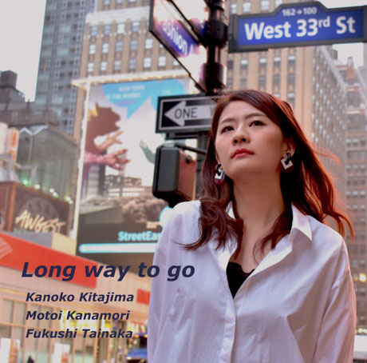
|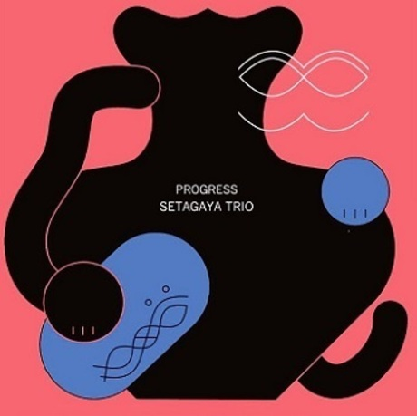
|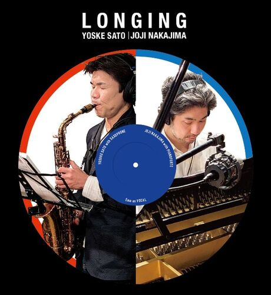
 |
| 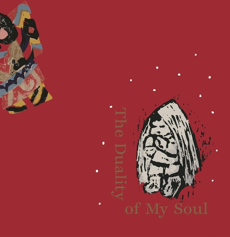
|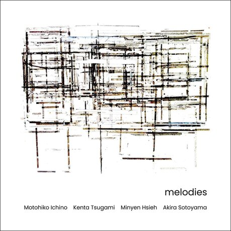
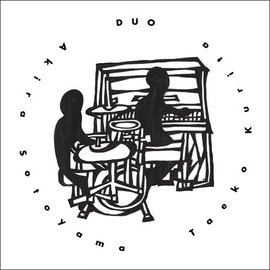
|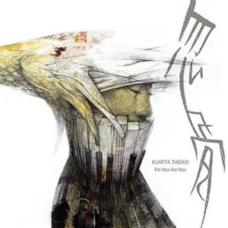
|
Audio Mix #20
<audio controls> <source src="./audio/compilation-20.mp3" type="audio/mpeg"> Your browser does not support the audio element. </audio>
- “A Goat Climbs a Peak” - Ghost Peak: The Goat on a Peak - 00:00
- “The Laughing Stock” - Hikari Ichihara Group: Unity - 03:13
- “Arrakis” - Hitomi Nishiyama: Echo - 06:22
- “I’m Missing You” - Hitomi Nishiyama Trio: I’m Missing You - 09:59
- “Sheepwash” - Fe: Live at Virtuoso - 13:06
- “Spring Is Here” - Akane Matsumoto & Ayumi Koketsu: Trust - 16:26
- “Barubaro” - Kaito Nakamura: Invisible Diary - 19:55
- “Ai San San” - Shinya Fukumori Trio: For 2 Akis - 22:54
- “Stolen Moments” - Layla Tomomi Sakai: Stolen Moments - 26:11
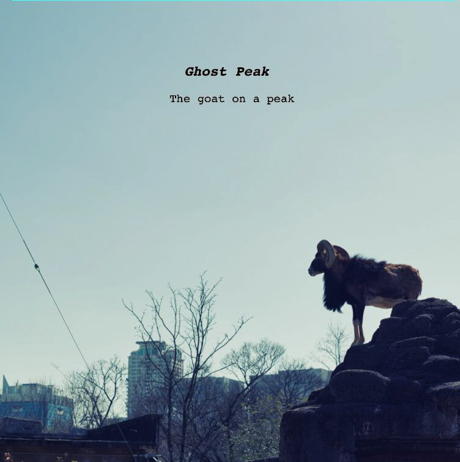
|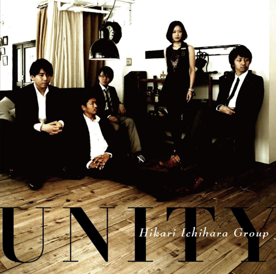
|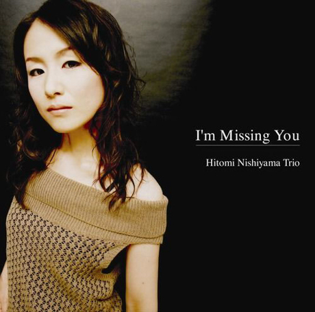
| |
| 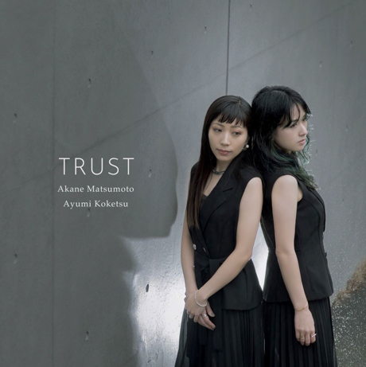
 |
| 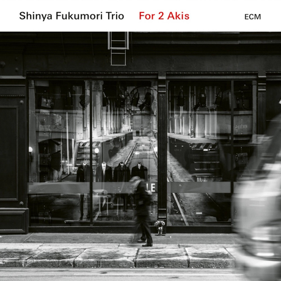
|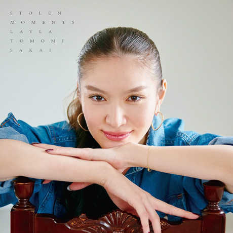
Audio Mix #19
<audio controls> <source src="./audio/compilation-19.mp3" type="audio/mpeg"> Your browser does not support the audio element. </audio>
- “Nostalgio” - Megumi Yonezawa / Masa Kamaguchi / Ken Kobayashi: Boundary - 00:00
- “Owari to Hajimari” - Nobie & Takayoshi Baba: Owari to Hajimari - 03:38
- “Wunderbarland” - Daiki Yasukagawa New Trio: The Three Roses - 06:50
- “Autumn Leaves” - Motoi Kanamori: The Live - 10:12
- “Short Stories No. 6” - Magnolia: El viento y las flores - 13:15
- “Flip a Coin” - Miyuki Moriya: Beyond the Sea - 15:48
- “Voltex” - Ami Fukui Trio: MCY - 19:21
- “Hanauta” - Hideaki Hori & Wataru Hamasaki: Encounter - 22:34
- “Poinciana” - Emiko Voice & Yuka Yanagihara: Enyana - 26:04
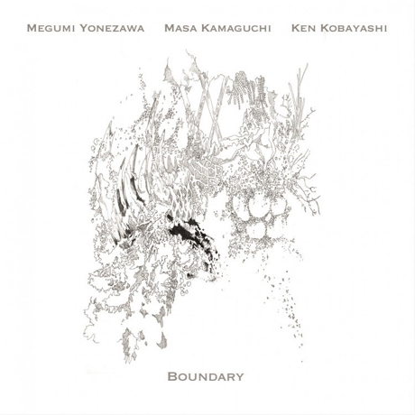
|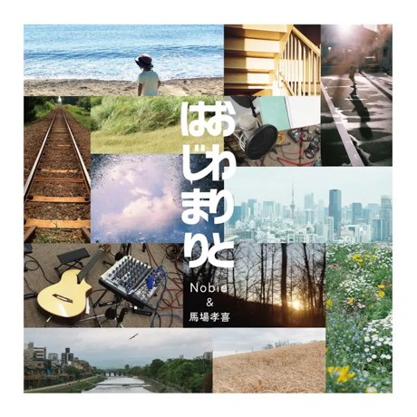
|
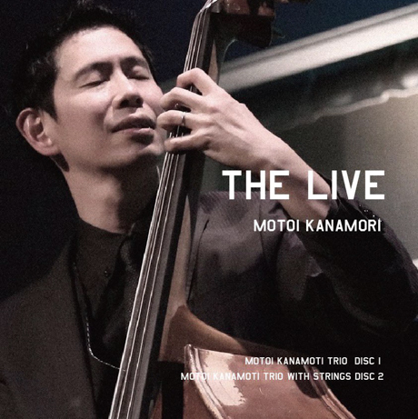
| |
| 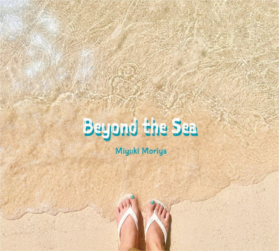
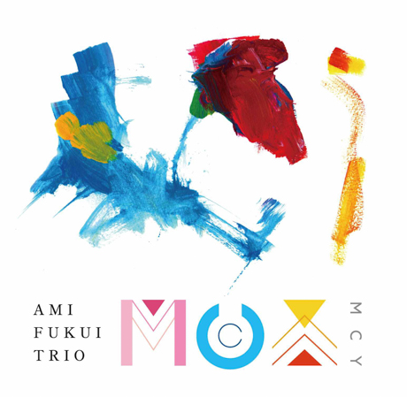
|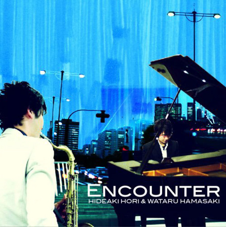
|
Audio Mix #18
<audio controls> <source src="./audio/compilation-18.mp3" type="audio/mpeg"> Your browser does not support the audio element. </audio>
- “Vain Pursuit” - Chie Nishimura: Virtual Silence - 00:00
- “Siciliano” - Makiyo Sakai: Silver Painting - 03:10
- “Slumber” - Ryosuke Hashizume Group: Side Two - 06:27
- “Ringlight” - Fumie Chiba: Rougequeue - 09:44
- “Snowflake” - Yuka Yanagihara Trio: Beloved Ones - 12:16
- “Makoto no Kotoba” - Seiji Endo: Piano Pieces Collection - 15:27
- “Erica” - Seiji Endo: Piano Pieces Collection II - 16:50
- “Updraft” - Hiro Kimura: Trees - 20:42
- “Oh Lady Be Good” - Akane Matsumoto: Oh, Lady Be Good - 24:22
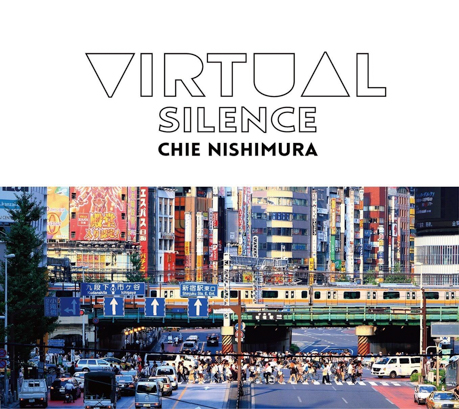
| |
| 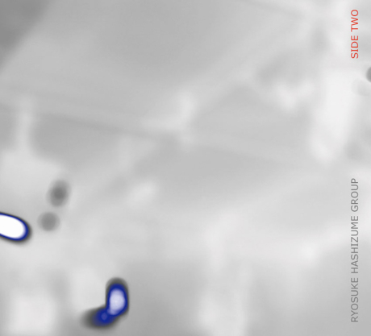
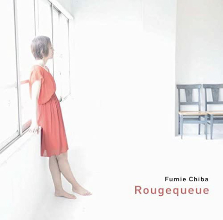
|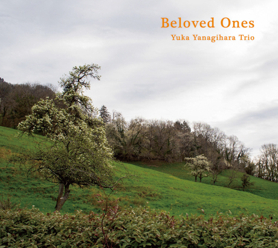
|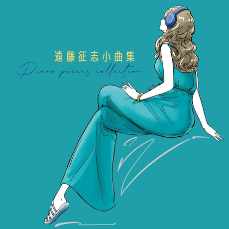
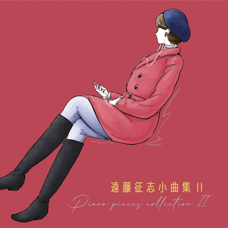
| |
|
Audio Mix #17
<audio controls> <source src="./audio/compilation-17.mp3" type="audio/mpeg"> Your browser does not support the audio element. </audio>
- “May Song” - Koichi Sato: Embryo - 00:00
- “Blues” - Yasumasa Kumagai & Ryu Kawamura: Ol’ School Jazz - 03:01
- “Loop” - Nobie: Primary - 05:24
- “I Miss the Blue Sky” - Sayaka Kishi Trio: Banquet - 08:36
- “Ibuki” - Clepsydra: Un Jour - 11:46
- “Grand Line” - Sumire Kuribayashi Trio: Toys - 16:42
- “The Rider” - Hitomi Nishiyama: Dot - 19:20
- “Chatchar” - Mamoru Ishida: Afterglow - 22:44
- “True Face” - Mabumi Yamaguchi: Viento - 26:59
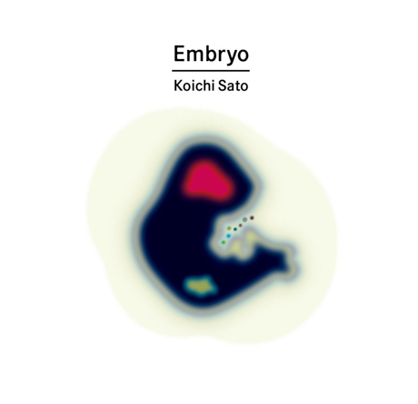
| |
| 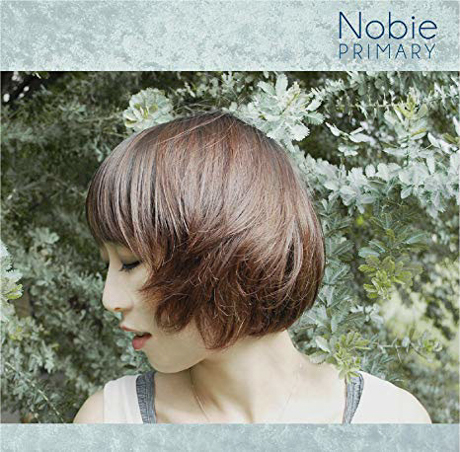
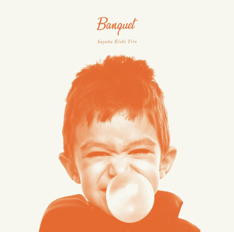
|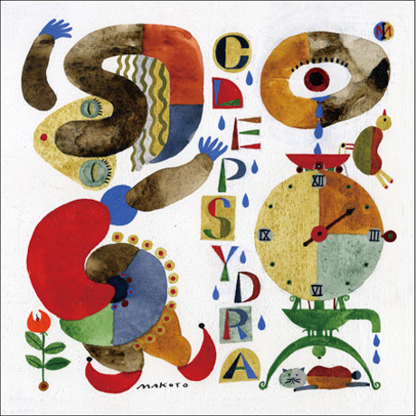
|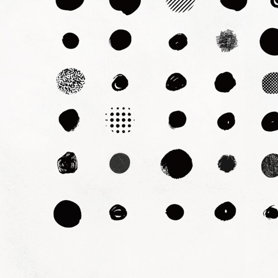
| |
| 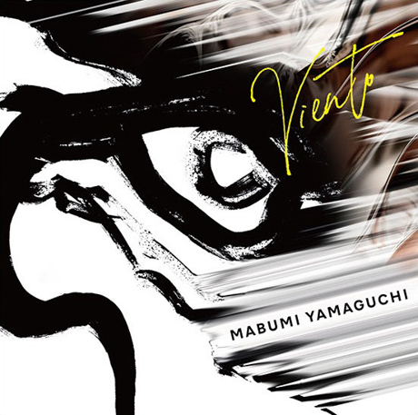
Audio Mix #16
<audio controls> <source src="./audio/compilation-16.mp3" type="audio/mpeg"> Your browser does not support the audio element. </audio>
- “Vibrant Line” - Reiko Yamamoto: The Square Pyramid - 00:00
- “Nature Boy” - Yuki Ito: Retattanni no Mori - 03:23
- “Saenk kun dit hoved du blomst” - Kazumi Ikenaga & Taihei Asakawa: NordNote - 06:15
- “Sara Smile” - Hikari Ichihara: Sara Smile - 08:40
- “Mokume #1” - Akihiro Yoshimoto & Takashi Sugawa: Oxymoron - 12:05
- “Wrapped Up” - Motohiko Ichino: Sketches - 14:35
- “I Will Wait for You” - Yoshiko Saita: Back in Time to Boston - 17:38
- “The Sea Seven Years Voyage” - Eri Chichibu: Crossing Reality - 20:47
- “Neste Pais” - Banda Feliz: Boa Viagem - 23:46
 |
|
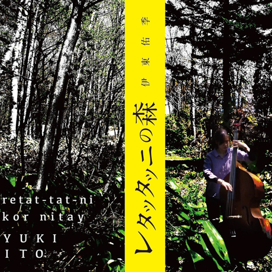
|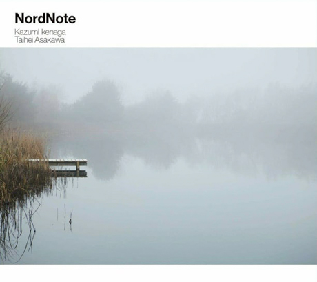
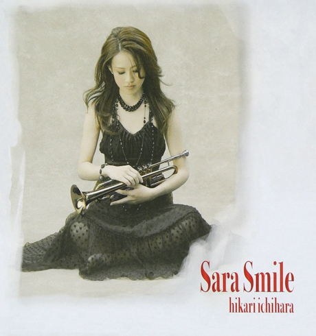
|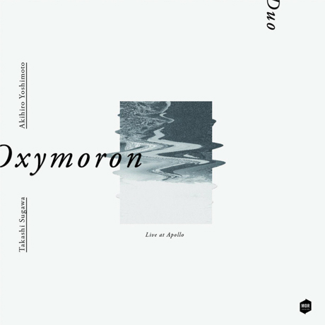
|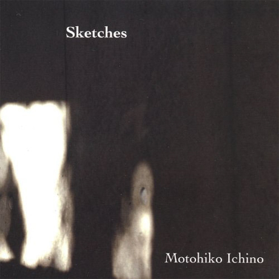
|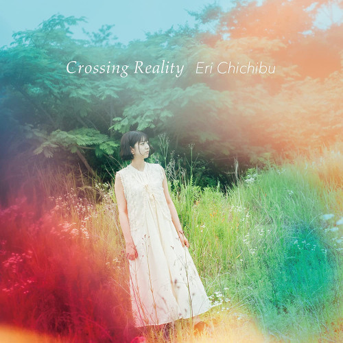
|
Audio Mix #15
<audio controls> <source src="./audio/compilation-15.mp3" type="audio/mpeg"> Your browser does not support the audio element. </audio>
- “Mysterious Dress” - Jabuticaba: Jabuticaba - 00:00
- “Le Bourgeon” - Nami Kano: Mawsim - 02:20
- “Savichara” - eFreydut: Fairway - 04:39
- “Loudvik” - Hitomi Nishiyama Trio: Calling - 06:38
- “Frozen Dust” - Takumi Seino & Motohiko Ichino: Frozen Dust - 09:46
- “Yakusoku” - Noriko Satomi: Project-N - 12:52
- “Punk” - Erisa Ogawa: Where Have U Been? - 16:12
- “Narrow and Wide” - Otohito Fuse Trio: Isolated - 18:46
- “Desifinado” - Miwo: Tranquillo - 21:49
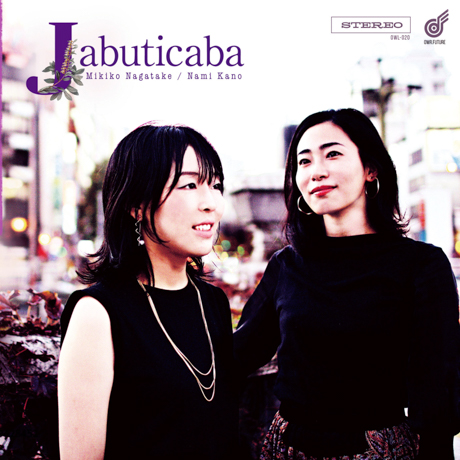
|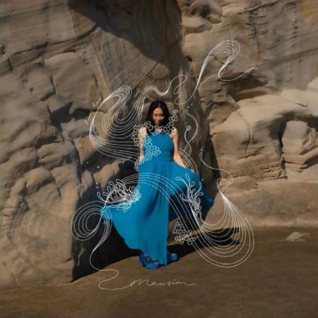
|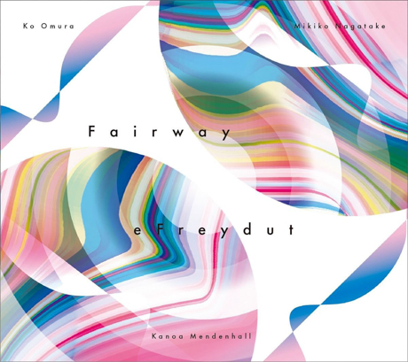
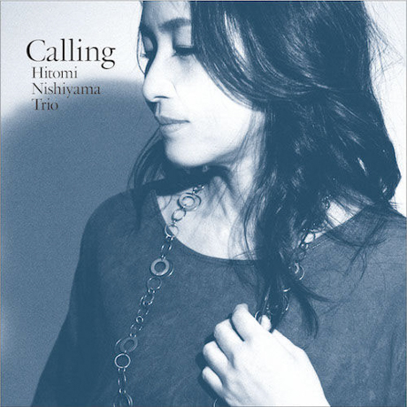
|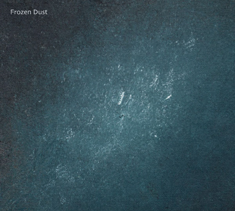
|
 |
| 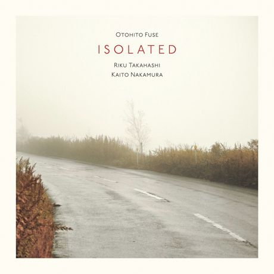
|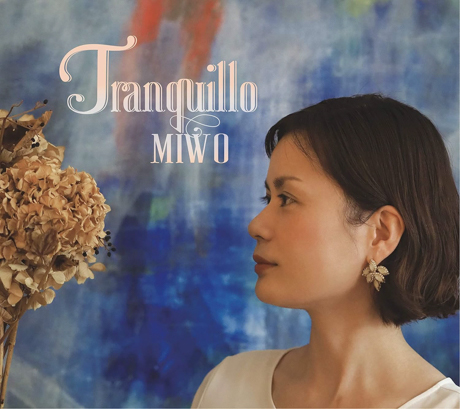
Audio Mix #14
<audio controls> <source src="./audio/compilation-14.mp3" type="audio/mpeg"> Your browser does not support the audio element. </audio>
- “J” - Kaoru Azuma / Hitomi Nishiyama: Faces - 00:00
- “First Contact” - Mase Hiroko Quintet: First Contact - 02:25
- “After Tours” - Yuka Yanagihara Trio: Inner Views - 04:43
- “Sense of Mission” - Keisuke Nakamura: Humadope 2 - 07:24
- “Hommage” - Ami Fukui Trio: Nova Manhã - 10:03
- “825” - Polyglot: Talk, Vol. 1 - 12:08
- “Minor King” - Hiroshi Fukutomi: Memory Stones - 15:16
- “Quand Biron Voulut Danser” - Chihiro Yamanaka: Lach Doch Mal - 17:35
- “M.T.” - Naoko Tanaka: Appreciation - 19:32
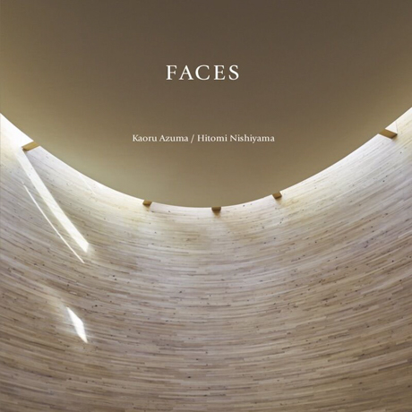
|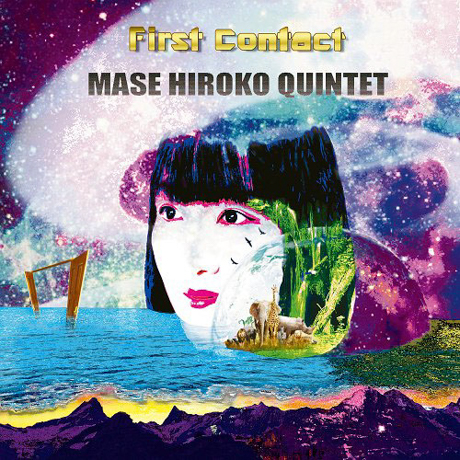
|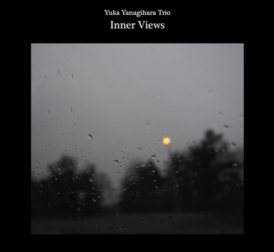
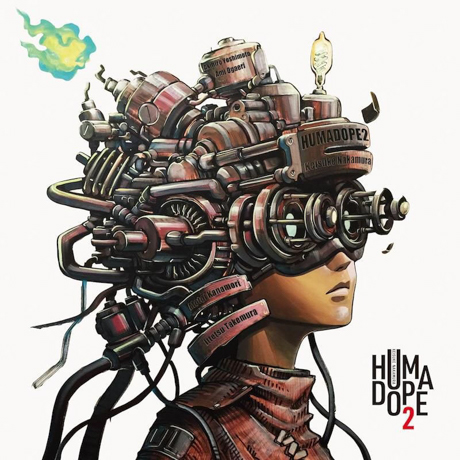
|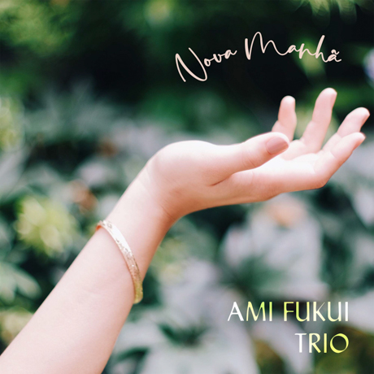
|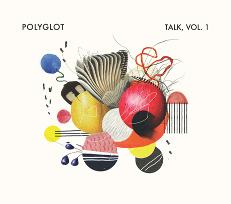
 | |
| |
Audio Mix #13
<audio controls> <source src="./audio/compilation-13.mp3" type="audio/mpeg"> Your browser does not support the audio element. </audio>
- “Hi no Kodomotachi” - Rabbitoo: The Torch - 00:00
- “Through the Lights” - Kaori Vibes Quartet: Starry Nights - 02:34
- “Plus fort que nous” - Shinpei Ruike & George Nakajima: Duo - 04:37
- “Laurentide Waltz” - Akane Matsumoto: Little Girl Blue - 06:51
- “1965” - Nanami Haruta: II - 08:48
- “Sliding Doors” - Hideaki Hori: Horizon - 11:18
- “A Song for U U” - Hideaki Hori: Melodies for Night & Day - 13:37
- “Uta Oto” - Miyuki Moriya: Uta Oto - 15:36
- “My Favorite Things” - Baby Brothers: Happy Christmas with Bb - 18:09
|  |
|  |
|  |
| |
|
| |
Audio Mix #12
<audio controls> <source src="./audio/compilation-12.mp3" type="audio/mpeg"> Your browser does not support the audio element. </audio>
- “No Return” - Yuichi Narita: Urban Nocturne - 00:00
- “Primavera de Batata” - Sul Madrugada: Luar - 01:28
- “Catherine no Yuutsu” - Yukako Yamano: Imperial - 03:31
- “Fifteen Years” - Bungalow: Abstract Messages - 06:05
- “Hashire Hashire Merosu” - FNK: Canvas - 08:09
- “McMahons Point” - Mamoru Ishida: Ishida Mamoru 4 feat. Mike Rivett - 10:49
- “Green Chimneys” - Mikiko Nagatake: Solo - 12:57
- “Apologetic Blues” - Yasumasa Kumagai & J-Jazz Homies: Last Resort - 14:37
- “Chovendo na Roseira” - Emiko Voice: Standard Trio - 16:57
| |
 | |
| |
| |
| |
Audio Mix #11
<audio controls> <source src="./audio/compilation-11.mp3" type="audio/mpeg"> Your browser does not support the audio element. </audio>
- “Frida” - Mariko Maeda: Awareness - 00:00
- “Face to Face” - Hiro Kimura Quintet: Folds - 01:42
- “Recollection” - Hitomi Nishiyama: Vibrant - 03:46
- “Sepia” - Yuichiro Aratake: Music Make Us One - 05:48
- “Funny Book” - Akihiro Yoshimoto Quartet: 64 Charlesgate - 08:16
- “I’ve Never Been in Love Before” - Seiji Harakawa Quartet: Skipping Down the Street - 09:60
- “Please Send Me Someone to Love” - Akane Matsumoto & Nanami Haruta: For My Lady - 12:03
- “Conversations With Moore” - Ryosuke Hashizume Group: Acoustic Fluid - 14:43
- “Triste” - Fumika Asari: Introducin’ - 17:15
- “Inori” - Tetsuji Yoshida & Mikiko Nagatake Duo: Live at Knuttel House - 19:18
 | |
| |
| |
| |
 | |
| | 
 | |
| |
Audio Mix #10
<audio controls> <source src="./audio/compilation-10.mp3" type="audio/mpeg"> Your browser does not support the audio element. </audio>
- “Zai Jian” - Ami Fukui Trio: Urban Clutter - 00:00
- “Victory” - Yukako Yamano & Yukari Inoue: Dubai Suite - 02:48
- “Dancing Elephant” - Bungalow: Unseen Scenes - 04:32
- “My Shining Hour” - Harumi Nomoto Trio: Another Ordinary Day - 06:35
- “Luna” - Yukako Yamano: 3rd Stage - 08:08
- “Choir’s Got Fired” - Yasumasa Kumagai: Pray - 10:11
- “Outside by the Swing” - Chihiro Yamanaka: Outside by the Swing - 12:44
- “Fly Me to the Moon” - Naoko Akimoto: No One Else - 13:47
- “I Can’t Fly” - Shunichi Yanagi Trio: Slope - 15:31
- “A Foggy Day” - Rie Taguchi: The Gift II - 17:35
- “First Touch” - George Nakajima Trio: First Touch - 19:16
| | | | | | | |
Audio Mix #9
<audio controls> <source src="./audio/compilation-9.mp3" type="audio/mpeg"> Your browser does not support the audio element. </audio>
- “JB’s Poem” - Yoshihito “P” Koizumi P-Project: By Coincidence - 00:00
- “Mane” - Naoko Sakata Trio: Flower Clouds - 01:03
- “Water Drops” - Fumie Chiba: Beautiful Days - 03:07
- “Dona Dona” - Fumiko Yamazaki: Here Goes! - 05:13
- “Old Diary” - Shinichi Kato & Masahiko Sato: Duet - 07:17
- “How Deep Is the Ocean” - Shigeo Fukuda & Toshiki Nunokawa: Childhood’s Dream - 09:21
- “The Last Train” - Protean: Protean - 11:25
- “Sai Dessa” - Meu Coracao: Hall Tone - 12:58
- “Goteborg” - Toshihiko Inoue & Masaki Hayashi: Mistral - 14:32
- “It Might as Well Be Spring” - Trigraph: Fever - 16:36
- “Nuovo Cinema Paradiso” - Ruriko Kawamura: Blossoms - 18:49
| |  | |
| |
| |
| |
| |
| |
Audio Mix #8
<audio controls> <source src="./audio/compilation-8.mp3" type="audio/mpeg"> Your browser does not support the audio element. </audio>
- “For All We Know” - Masako Kunisada: Wonderful Life - 00:00
- “Street Lights” - Aquapit: Aquapit - 01:27
- “Sailing” - Naoko Tanaka Trio: Memories - 02:30
- “G Island” - TCQ: Memories of T - 03:54
- “Memories of You” - Akane Matsumoto: Memories of You - 04:57
- “Kyoto Tower” - Takayuki Yagi: New Departure - 06:20
- “Scratch” - Miki Hirose: Scratch - 07:23
- “Meu Escudo” - Yuka Ueda: Dois - 08:26
- “Satin Doll” - Water Me!: Water Me! - 09:44
- “Choro de Tremolo” - Duo Tremolo: Resonance - 11:05
- “Whisper Not” - Layla Tomomi Sakai: Whisper Not - 12:08
- “Living Time Event V” - Chihiro Yamanaka Trio: Madrigal - 13:14
- “Libertango” - Arco: Live At Yoncha - 14:17
- “Mirage” - Yukiko Hayakawa Trio: Gallery - 15:35
| |
| |
| |
| |
 | |
| |
Audio Mix #7
<audio controls> <source src="./audio/compilation-7.mp3" type="audio/mpeg"> Your browser does not support the audio element. </audio>
- “Balkan Tale” - Chihiro Yamanaka Trio: Living Without Friday - 00:00
- “Face” - Ryosuke Hashizume Group: Wordless - 01:03
- “Confirmation” - Emiko Voice x Suga Dairo: Phase 2 - 02:06
- “Improvisation” - Maiko: Solo - 03:09
- “Someday My Prince Will Come” - Yukari Inoue: Sakura - 04:14
- “Sora” - Eriko Shimizu: Sora - 05:17
- “Hisyo” - Manabu Ohishi Trio: Gift - 06:20
- “Sakura” - Yuko Miyawaki: Song of Flower - 07:23
- “Shibuya Crossing” - Shunichi Yanagi Trio: Bubble Fish - 08:27
- “Over the Rainbow” - Baby Brothers: Bb - 09:30
- “Underpass” - Bungalow: Metropolitan Oasis - 10:43
- “7up” - Harumi Nomoto Trio: Belinda - 12:01
- “Pressentimento” - Yuka Ueda: Agora - 13:14
- “Metro Maniac” - Motoi Kanamori: My Soul Meeting - 14:22
- “Fiesta” - Arco: Birth - 15:25
- “Grasshopper” - Fuse: Live Fuse - 16:28
- “Taxi” - Chihiro Yamanaka Trio: When October Goes - 17:34
- “Major to Minor” - Kohsuke Mine Quintet: Major to Minor - 18:37
| |
| |
| |
| |  | |
| |  | |
| |
Audio Mix #6
<audio controls> <source src="./audio/compilation-6.mp3" type="audio/mpeg"> Your browser does not support the audio element. </audio>
- “Beatrice” - Miki Hayama: Prelude to a Kiss - 00:00
- “Workout” - Seiji Tada: Workout!! - 01:03
- “This is New” - Hideaki Hori Trio: In My Words - 02:06
- “The Crosseyed Cat” - Routine Jazz Sextet: Routine Jazz Sextet - 03:09
- “Three” - Maiko Trio: Live! Three - 04:12
- “Subliminal Sublimation” - Rabbitoo: National Anthem of Unknown Country - 05:15
- “Mary Hartman, Mary Hartman” - Hideaki Kanazawa & Sumire Kuribayashi: Nijuso - 06:18
- “Part 1 Acknowledgement” - Noriko Satomi: A Love Supreme - 07:21
- “Almost Like Being in Love” - Azumi: Almost Like Being in Love - 08:24
- “I Don’t Know Yet” - Hiromi Miura: We Don’t Know Yet - 09:28
- “Wicked Wind” - Yudo Matsuo: Bonanza - 10:31
- “Tonight” - Daiki Yasukagawa Trio: Trios II - 11:34
- “Mr. PC” - Fumio Karashima Trio: It’s Just Beginning - 12:37
- “Ghosts Tear” - Reikan Kobayashi: Gakudan Hitori - 13:40
- “Tuck Box” - Miyuki Moriya: Cat’s Cradle - 14:43
- “Part I” - Trio Export 63.1.0.X: Small Pieces for Flying Padre - 15:46
| |
|  |
|
|
|  |
| |
| |
| |
|
| |
| |
| |
Audio Mix #5
<audio controls> <source src="./audio/compilation-5.mp3" type="audio/mpeg"> Your browser does not support the audio element. </audio>
- “Fairy Woods” - Zephyr: Zephyr - 00:00
- “Do Re Mi” - Harumi Nomoto Trio: Virgo - 01:03
- “I Loves You, Porgy” - Yuichiro Aratake: The Light Flows In - 02:06
- “Yamikuro” - Hikari Ichihara Group: Move On - 03:09
- “Sympathy” - Hitomi Nishiyama Trio: Sympathy - 04:12
- “Kiritsubo” - Seiji Endo: Genji Monogatari Volume 1 - 05:15
- “Only Trust Your Heart” - Layla Tomomi Sakai: The Island - 06:18
- “Karibu” - Nobie: Bénin Rio Tokyo - 07:21
- “Long Ago and Far Away” - Daiki Yasukagawa Trio: Kanmai - 08:24
- “Don Papa” - Sayaka Kishi Trio: Life Is Too Great - 09:28
- “Zi Zi” - Minoru Yoshiki Soulstation: Path of Hope - 10:31
- “Cavatina” - Shinichi Kato: Bass on Cinema - 11:34
- “Cheek to Cheek” - Mie Joké: Etrenne - 12:37
- “Sequel to a Dream” - Mabumi Yamaguchi: Let Your Mind Alone - 13:40
- “Under a Blanket of Blue” - Yako Horikita: Shining Hour - 16:44
- “Galaxies” - NHORHM: New Heritage of Real Heavy Metal -Extra Edition- - 17:47
| |
 | |
| |
| |
| |
| |
| |
| |
| |
| |
| |
Audio Mix #4
<audio controls> <source src="./audio/compilation-4.mp3" type="audio/mpeg"> Your browser does not support the audio element. </audio>
- “I Need a Change, Too” - Yasumasa Kumagai: I Need a Change, Too - 00:00
- “Offer Refused” - Hakuei Kim Trio: Open the Green Door - 01:53
- “Absinthe” - Ami Fukui: Amizm - 02:56
- “Mirrored Mirror” - Koichi Sato: Utopia - 05:29
- “Dream Garden” - Taihei Asakawa Trio: Touch of Winter - 06:32
- “Bichigusorock” - Sayaketts: Colors - 07:35
- “Sun Moon and Children Smile” - Seiji Endo: Sakura Meditation - 08:38
- “Sally Gardens” - Michiyo Matsushita: Sally Gardens - 11:30
- “Peaceful Mind” - Trispace: Trispace - 12:18
- “11th Door” - Fumie Chiba Trio: Tip of Dream - 13:21
- “My Foolish Heart” - Taihei Asakawa: Waltz for Debby - 14:24
- “Christmas Medley” - Sanae Ishikawa: Grown-up Christmas Gift - 15:28
- “Years” - Tokuhiro Doi Quartet: Amalthea - 16:34
- “Ray” - Maki Fujimura: Best Wishes - 17:37
- “Cycles” - Ryosuke Hashizume Group: Visible/Invisible - 18:40
- “The Nearness of You” - Shinpei Ruike & George Nakajima: N.40° - 19:43
- “Playing” - Akane Matsumoto: Playing New York - 20:46
- “Sturm Und Drang” - Blue Dot: Halo - 21:49
- “From a Distance” - Masako Kunisada: M - 22:52
| |
| |
| |
| |
 |
|  |
| |
| |
|
| |
| |
Audio Mix #3
<audio controls> <source src="./audio/compilation-3.mp3" type="audio/mpeg"> Your browser does not support the audio element. </audio>
- “Spur” - Les Komatis: Les Komatis - 00:00
- “A Dancer’s Melancholy” - Mayuko Katakura: The Echoes of Three - 01:03
- “Move” - Hitomi Nishiyama Trio “Parallax”: Live - 02:06
- “I’m Yours” - Manabu Ohishi Trio: Wish - 03:09
- “Four in One” - Hara Dairiki Trio: You’ve Changed - 03:57
- “Two Lives” - Ken’ichiro Shinzawa: Piano Works - 05:00
- “What’s Next” - Miki Hayama Trio: Wide Angle - 05:48
- “There Will Never Be Another You” - Yuya Wakai: Images - 06:51
- “With May” - Ayumi Koketsu: Rainbow Tales - 07:40
- “Josho Kiryu” - Bungalow: Past Life - 08:43
- “Cheek to Cheek” - Sanae Ishikawa: Feel Like Makin’ Love - 09:31
- “The Pioneer” - Taihei Asakawa: Catastrophe in Jazz - 10:34
- “Slow Highway” - Ko Omura: Introspect - 11:37
- “Land Scape” - Takako Yamada: The Flow of Time - 12:40
- “Over Parents” - Yukako Yamano: 1st Stage - 13:43
- “Big Catch” - Wataru Hamasaki Meets Akane Matsumoto Trio: Big Catch - 14:46
- “Sabaku No Akari” - Akihiro Yoshimoto Quartet: Moving Color - 15:49
- “Our Love Is Here to Stay” - Hideaki Hori Trio: Unconditional Love - 18:24
| |
| |
| |
| |
 | |
| |
| |
| |
Audio Mix #2
<audio controls> <source src="./audio/compilation-2.mp3" type="audio/mpeg"> Your browser does not support the audio element. </audio>
- “In a Reverse Way” - Takuji Yamada: Lite Blue - 00:00
- “Circle for Peace” - Seiji Endo: Circle for Peace - 00:48
- “The Railway Station” - Koichi Sato: Melancholy of a Journey - 01:36
- “The Lady Is a Tramp” - Rie Taguchi: The Gift - 02:24
- “Stone Pavement” - Ryosuke Hashizume: Needful Things - 03:12
- “Fireworks” - Toshihiko Inoue: Vayu - 04:15
- “Nag Champa” - Sohnosuke Imaizumi: Rin - 05:02
- “Blues for Tyner” - Mayuko Katakura: Inspiration - 05:50
- “Haru no Kaze” - Sachiko Ikuta Trio: Haru No Kaze - 06:38
- “Ferris Wheel” - Sumito Oi: Sumitty & The Funfair - 07:27
- “Love Dance” - Tomoka Miwa: Colors in Silence - 08:15
- “Unfolding Universe” - Hitomi Nishiyama Trio: Music in You - 09:18
- “Tsutaete Ikou” - Seiji Endo: Tsutaete Ikou - 10:21
- “Samba de Uma Nota So” - Meu Coracao: A Tempo - 11:24
- “New Journey” - Ami Fukui Trio: New Journey - 12:12
- “All the Things You Are” - Atomi Hamada: This is Atomi - 13:15
- “Cross Point” - Kaori Vibes Quartet: Cross Point - 14:18
| | | | | | | | | | | |
Audio Mix #1
<audio controls> <source src="./audio/compilation-1.mp3" type="audio/mpeg"> Your browser does not support the audio element. </audio>
- “Unspoken Language” - Kazumi Ikenaga: Niwatazumi - 00:00
- “Night and Day” - Akane Matsumoto: Night & Day - 00:48
- “Cool Bunny” - Ayumi Koketsu: Art - 01:36
- “Santa Cruz” - Bungalow: You Already Know - 02:24
- “The Days of Wine and Roses” - Emiko Voice: Carta - 03:12
- “Still” - Ryosuke Hashizume Group: Incomplete Voices - 04:00
- “Draft Beer” - Yasumasa Kumagai: J-Straight Ahead - 04:48
- “Asymmetry” - Arco: Asymmetry - 05:36
- “Up to You” - Sayaka Kishi: Featuring Te - 06:24
- “Flowers on the Hill” - Akiko Suda: Flowers On The Hill - 07:13
- “Someone to Watch Over Me” - Hiroco Nagano: Okurimono - 08:01
- “Flying Mind” - Kaori Vibes Quartet: Flying Mind - 08:49
- “Monk’s Dream” - Satoshi Kosugi: Bass on Times - 09:37
- “Flood” - Hitomi Nishiyama Trio: Many Seasons - 10:25
- “Speed Harassment” - Keisuke Nakamura: Humadope - 11:13
- “Sopa de Ajo” - Junichiro Ohkuchi Trio: Invisible - 12:01
- “Mrs. Parker of KC” - Mayuko Katakura: Faith - 13:04
| |  | |
|
| |
|  |
| |
| |
| |
|
| |
| |
| |